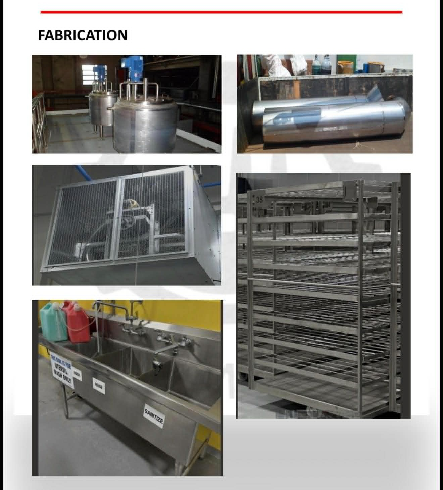
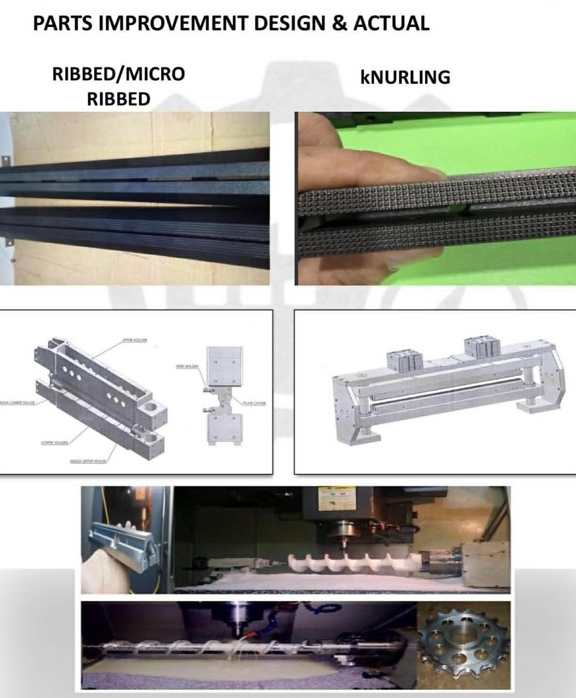
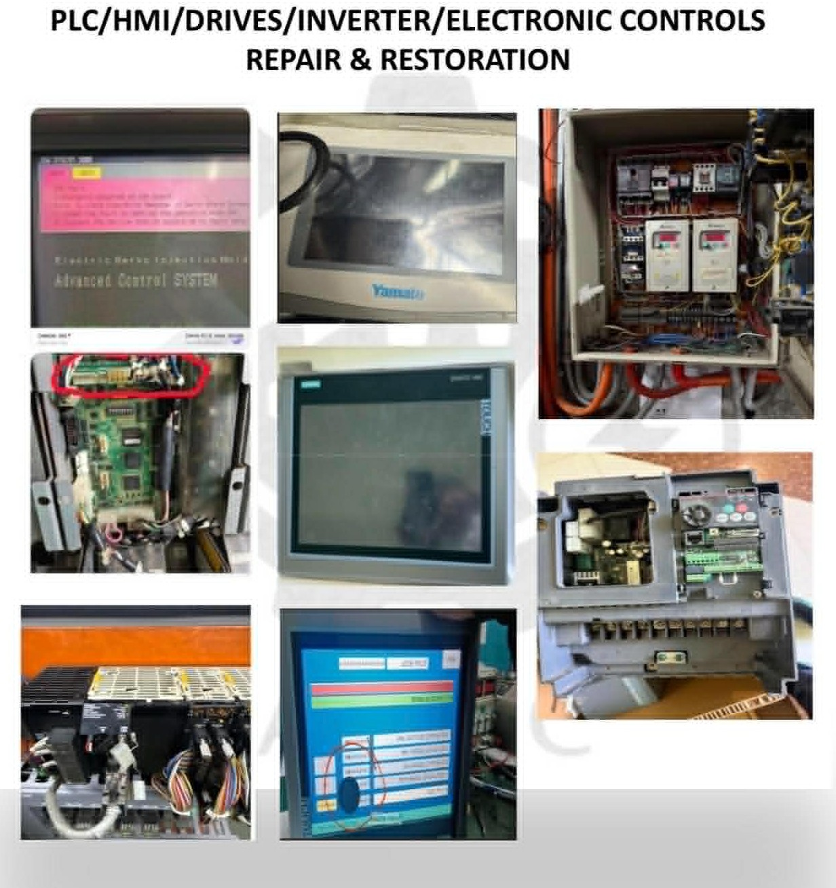
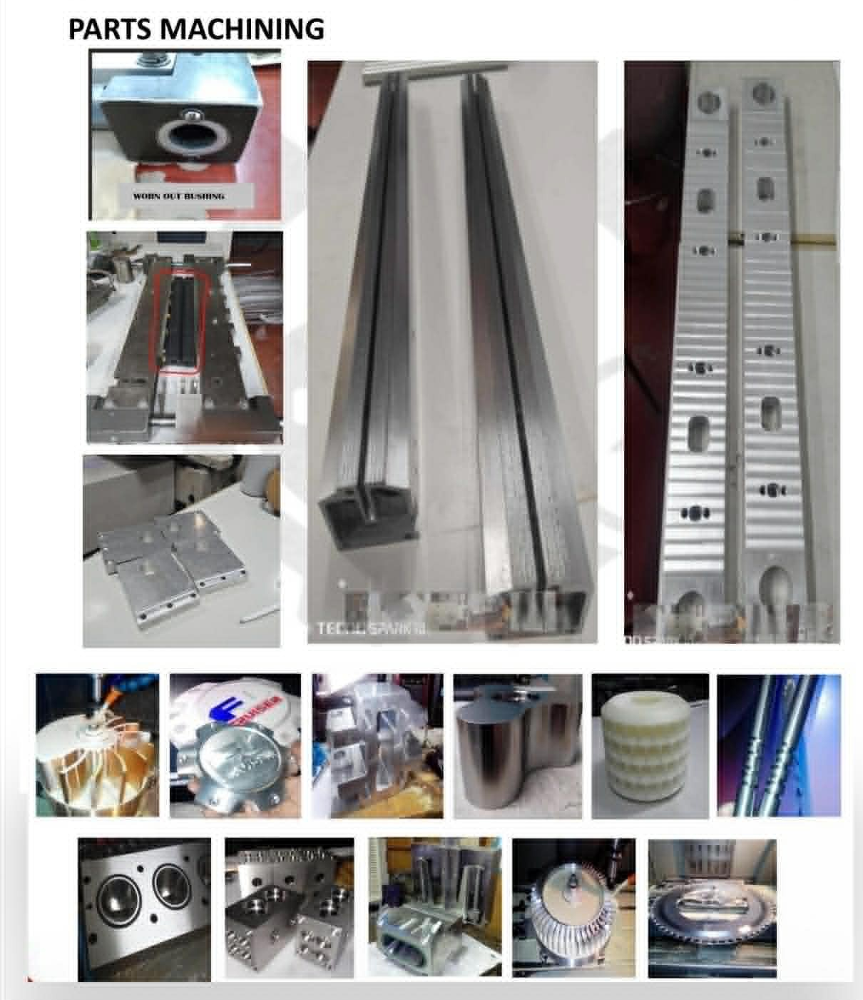

From first sketch to the 2am breakdown call — everything below happens in-house, on our own machines.
Turning manual production steps into mechanized systems that don't need a person doing it by hand.
Wiring sensors, PLCs, and control systems into equipment that used to run on relays and guesswork.
Mapping the process, cutting the waste, and training the floor to keep it that way.
Preventive and predictive maintenance built around your actual equipment, not a generic checklist.
Jigs, fixtures, and retrofits sized for what a small or mid-size line can actually justify.
Outsourced mechanical, electrical, and electronic upkeep — including the after-hours breakdown call.
The specific work that fills our schedule, week to week.
Real shop-floor photos — our work, our hands, our equipment.




Real strength in mechanical + electronic integration, not just one or the other.
Automation projects planned and priced around payback, not novelty.
Maintenance built to extend asset life, not just react to failure.
Third-party maintenance agreements sized to your actual need.
One partner for design, build, operate, and maintain.